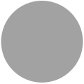

Hamilton Heights, NY 40.83,-73.95
Sun 06:57:47  16:29:53 16:29:537℃ 68% Feels Like 4℃ Cloudy | |
| Ceiling (m) | 10100 Cloudy |
| 1/6/24h (mm) 1/6/24h (cm) | / /4.06 / / |
| Altimeter (hPa) Mean SL (hPa) | 1001.69 1.02 1000.90 |
| Dew Point (℃) Change 24h (℃) Max/Min 24h (℃) Max >7am (℃) | 1 -8 15/6 14 |
| UV (Idx) | |
| Air Quality (Idx) NO2/O3/SO2 (Idx) PM2.5/10/CO (Idx) | 11 11 10 |
| Visibility (Km) | 16.09 |
| Dir (Gusts) (Km/h) | 14 (27) |
| Pollen | |||
|---|---|---|---|
| 11/28 07 | |||
| 11/28 19 | |||
| 11/29 07 | |||
| 11/29 19 | |||
| 11/30 07 | |||
| 11/30 19 | |||
| 12/1 07 | |||
| 12/1 19 | |||
| 12/2 07 | |||
| 12/2 19 | |||
| 12/3 07 | |||
| 12/3 19 | |||
| 12/4 07 | |||
| 12/4 19 | |||
| 12/5 07 | |||
| Moon | Phase | Age | AgePh |
| 12/1 01:10 | 21.9 | 22 | |
| 12/8 19:52 |  | 29.3 | 0 |
| 12/17 00:43 | 7.2 | 7 | |
| 12/23 20:29 | 14.5 | 15 |